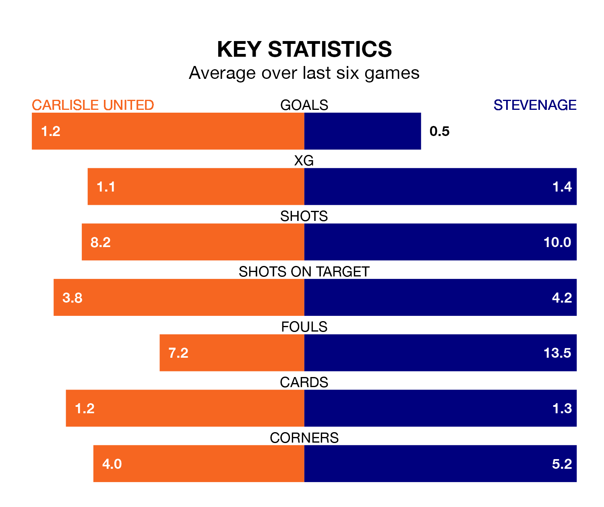

Stevenage are strong favourites to take all three points despite Carlisle United's home advantage in Saturday's match at Brunton Park.
*Betting Company* are offering odds of 1.8 on Stevenage sealing the win, with the visitors sitting eighth in EFL League One table.
Carlisle, who are 24th in the league and 38 points behind the Boro, are priced at 3.96 to win. A draw is set at 3.2.
In Jamie Reid, Stevenage have one of the league's most on-form strikers so far this season. He has notched 17 goals in 36 appearances, to sit second in the scoring charts.
His goal rate of one every 172 minutes is quicker than that of Jordan Gibson, Carlisle's top scorer with a goal every 333 minutes, and a total of seven goals in 36 games.
United are in bad form in EFL League One, with one win and five losses from their last six games.
With two wins and two draws over that period, the Boro's form is better – they have taken eight points from 18, compared to the hosts' three.
In the last 10 years, Carlisle and Stevenage have played each other on 16 occasions. Carlisle won seven of them, Stevenage five, and they drew four times.
On average, Carlisle scored 1.2 goals and the Boro 1.1 in those matches.
Their last meeting was on September 9, when they played out a 2-2 draw.
With 33 goals in 38 games so far this season, Carlisle are scoring at below the league average rate with 0.9 goals per game. And they are conceding more than average, letting in 67 goals at a rate of 1.8 per game.
The away team, meanwhile, are average scorers, with 1.3 goals per game. They have conceded 1.0 goal per game.
Carlisle's last match was on March 16, a 1-0 loss against Shrewsbury Town.
Stevenage lost 1-0 against Leyton Orient last time out, also on March 16.
Saturday's match will be refereed by Daniel Middleton, who has taken charge of nine EFL League One games so far this season, issuing three red cards and booking 29 players. He has awarded two penalties.
The last Carlisle game Middleton refereed was a 2-2 home draw with Northampton Town on December 16. He is yet to oversee a match featuring Stevenage this season.
Updated: 10:19 (UTC), 22/03/24